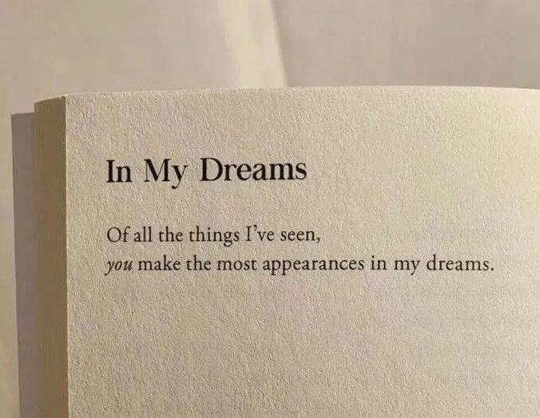
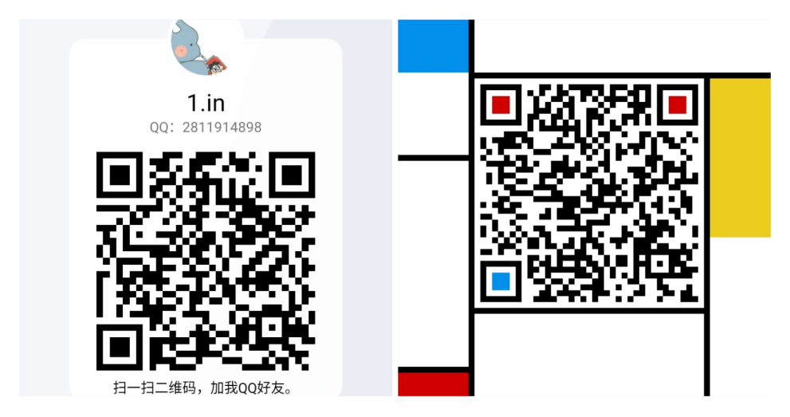

老的一辈总说:“成长就是把哭声调成静音的过程,但当你有一天蓦然回首时,才发现生命是一场无法回放的绝版电影。”
短短十九载,人生何其快！
我,是一个普通的人,普通到不能再普通。没有天赋,没有特长,生活平平无奇,世界从不会因为这样一个人而掀起一丝波澜。
时间,像水,而我的世界,是一条大河。我渐渐长大,于源头出发,乘船而下……
我的船客渐渐多了起来,给我这艘不起眼的船带来了一丝丝生气和活力。
我对待朋友们总是很真诚,朋友们对我很好。
原来啊这条河并没有想象中的那么平静,有时它也很调皮,总会带给我些许风浪。
有些船客下船了,他们已经到达了此行的终点。但每到一处新的地方,总会有新的旅客乘船,这似乎已经成为了一个定律。前方的路很漫长,我的目的地却不知在何方。
船客们陆续辞行,我低着头,无言。即使深知离别是必然的,每当想起时,仍旧悲伤。
这一路上,有喜,有悲,有哭,有笑。这一幕幕场景,是你们带给我的绝版电影。
感谢一路上陪伴过我的和正在陪伴着我的你们！有你们这些朋友,我如获珍宝！
You made me，and are gonna make me.

Welcome new friends!
